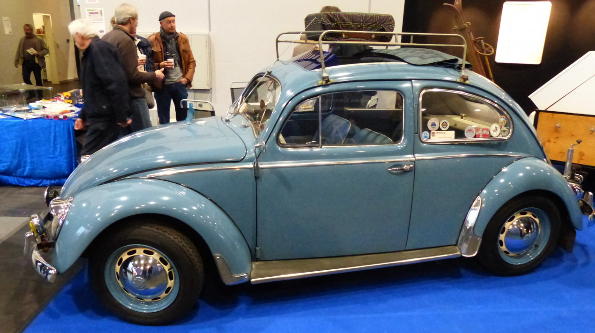
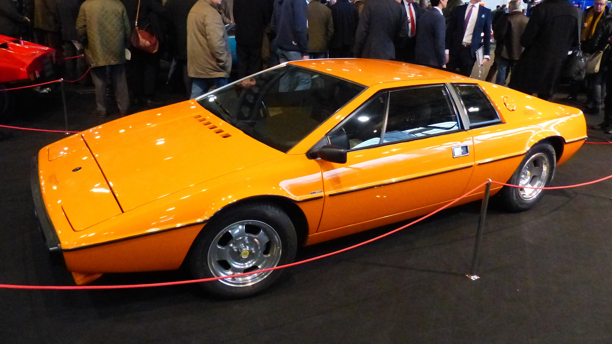
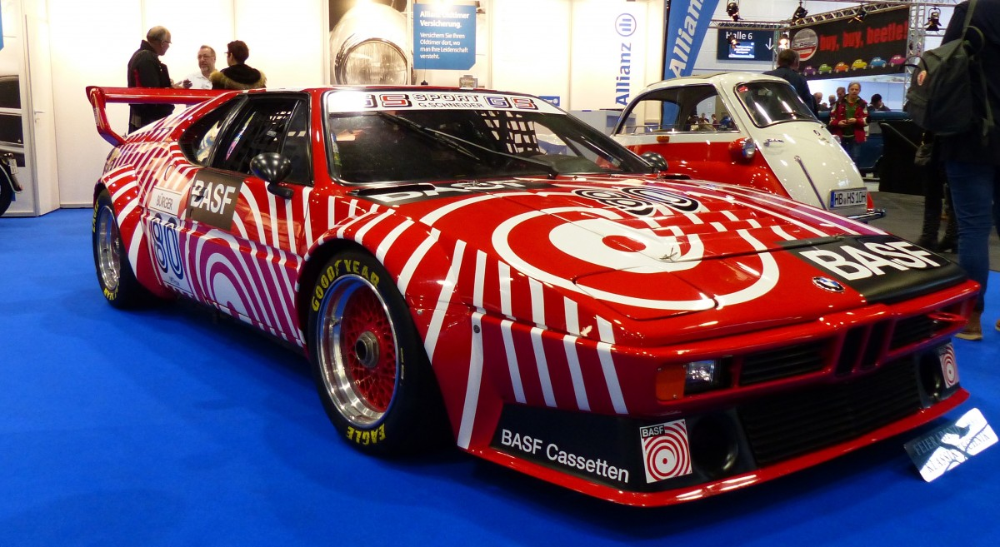
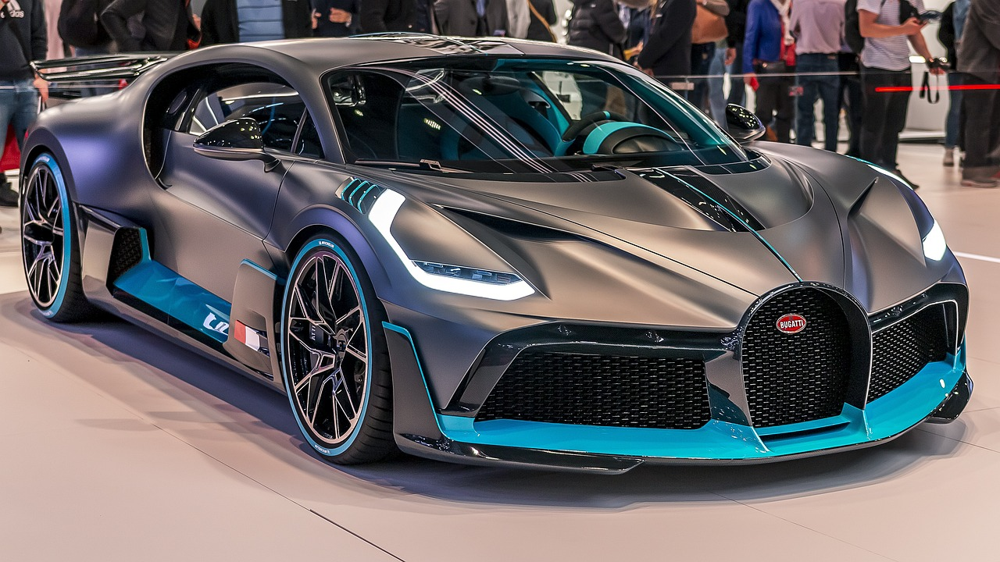
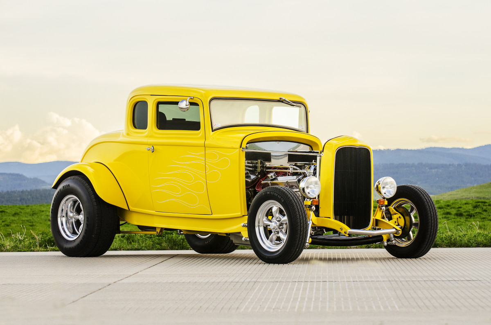

Classics


Les voitures anciennes en disent long sans dire un mot. Manifestant une nostalgie sur quatre roues.
Sports


De nombreuses voitures sportives modernes sont équipées de fonctionnalités de sécurité avancées, telles que des systèmes de freinage antiblocage, des airbags latéraux et des caméras de recul. Avant d'acheter une voiture sportive, assurez-vous qu'elle offre les fonctionnalités de sécurité dont vous avez besoin.
Top ZZZZZZ

Comme une sensation de "La Grange"...